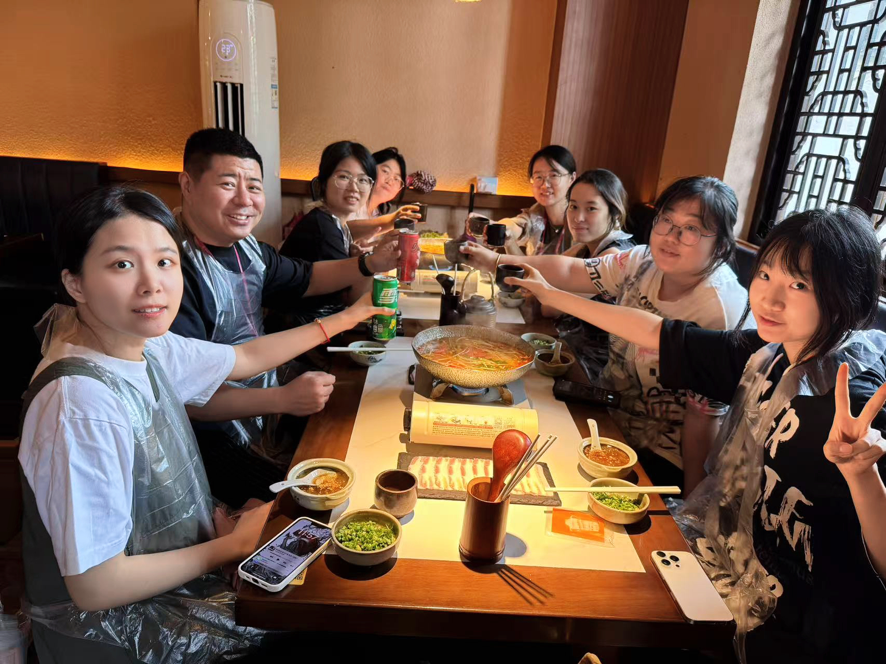
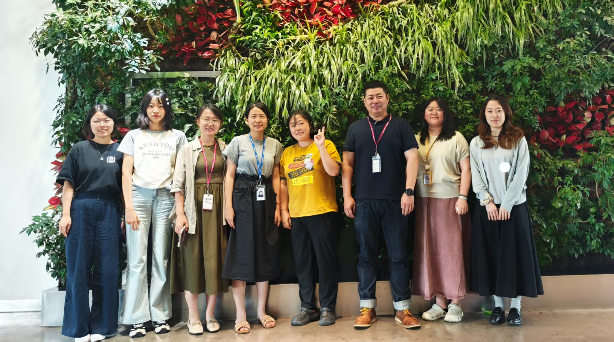
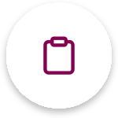
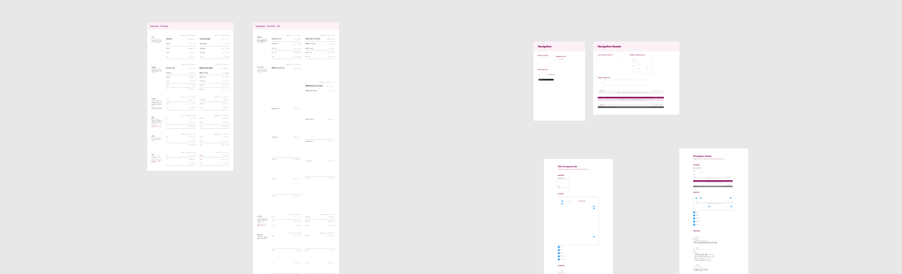
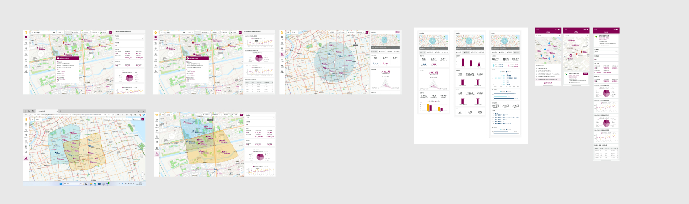

Astrazeneca Internship
Introduction
From April to August 2025, I completed a wonderful 5-month UX Design Internship at AstraZeneca (Shanghai, China). Here, I had the opportunity to present my final UX strategy and design solutions. I want to express my deepest gratitude to my mentor, Mr. Wang, and all my amazing colleagues in the UX team. Your guidance and support have been instrumental in my professional growth.


Featured project
During my UX internship at AstraZeneca, I contributed to a design system update for an internal B2B platform. As the old system could no longer support complex business needs in terms of component standards, documentation, and reuse consistency, the team evolved and optimized the existing system.
I mainly led navigation component optimization, accessibility color checks, and design system documentation. Referencing established systems such as Material Design and Carbon Design System, I refined component naming, state definitions, and documentation structure, and independently created guidelines for component usage, anatomy, and states.
For navigation, the B2B platform needed to accommodate large amounts of text, charts, tables, and multi-level information. Through research and team discussions, we compared different navigation patterns and adopted a combination of top navigation and side navigation to balance global access with complex information hierarchy. I also used accessibility plugins to audit color contrast, helping improve the system’s readability, consistency, and accessibility.
1. Research
Doing research on design system like Material Design, Carbon Design System.

2. Define
Define design system requirements and collaborate with the team on optimization strategies.
3. Design
Design Figma components that align with product needs and visual system.
4. Components
Create component states and variants.
5. Documentation & Revision
Review and refine the new design system based on the previous design system documentation.

I also had the opportunity to work closely with senior UX designers and IT engineers on the AZ Map project. I assisted in interaction design, conducted usability testing, and drove iterations based on user feedback.

Beyond product design, I leveraged Figma and Photoshop to create internal visual materials (KV, posters). By translating requirements from HR and IT departments into clear visual assets, I helped streamline internal workflows and boost employee engagement.
Takeaways
During the time at AstraZeneca, I grew from a design student into a collaborative professional. My biggest takeaway is that great design is a team sport. Through hands-on practice, I’ve gained a deep understanding of the end-to-end UI/UX design workflow in a real-world corporate environment, from the initial requirement gathering to the final developer handoff.
More importantly, this journey taught me what truly defines “Good Design”: it’s not just about aesthetic appeal, but about consistency, accessibility, and the ability to solve complex problems while providing a good user experience. Huge thanks to the team for pushing me to be my best!